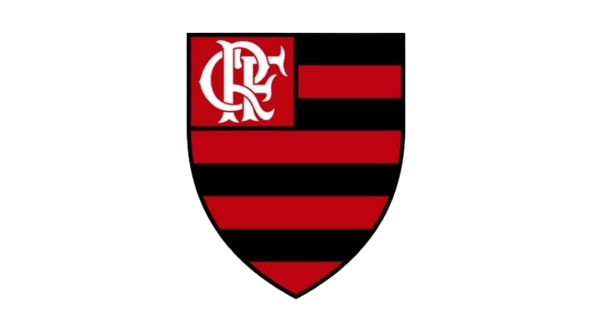

Clube de Regatas do Flamengo
A fundação do Flamengo, em 1895, ocorreu inicialmente em função do remo, um esporte de grande popularidade no Brasil no final do século XIX. Motivados pela paixão pelo esporte e pelo desejo de superar remadores de outros clubes, jovens da praia do Flamengo, como José Agostinho Pereira da Cunha, Mário Espíndola, Augusto de Figueira Lopes e Nestor de Barros, iniciaram o projeto.
Após alguns desafios iniciais, incluindo a perda de uma embarcação, uma nova reunião foi realizada em 17 de novembro de 1895, na casa de Nestor de Barros. Nesse encontro, a diretoria foi eleita e a data oficial de fundação foi decidida como 15 de novembro, em homenagem à Proclamação da República.
As primeiras cores do clube eram azul e dourado, mas devido à dificuldade de encontrar tecidos importados na época, foram alteradas para o uniforme com camisa listrada horizontalmente em preto e branco, bermuda preta e cinto branco.
A Chegada do Futebol
O futebol chegou ao Flamengo apenas em 1911, de forma inusitada. Mesmo sem um local adequado para treinamento, o clube aderiu ao esporte quando um grupo de jogadores do Fluminense se desentendeu com a diretoria de seu clube e migrou para o Flamengo. A partir desse momento, o futebol se destacou no clube, que conquistou muitos títulos desde então.
Títulos do Flamengo
- Mundial Interclubes: 1981;
- Copa Libertadores da América: 1981, 2019 e 2022;
- Copa Mercosul: 1999;
- Copa Ouro Sul-Americana: 1996;
- Campeonato Brasileiro: 1980, 1982, 1983, 1987*, 1992, 2009, 2019 e 2020;
- Copa do Brasil: 1990, 2006, 2013 e 2022;
- Supercopa do Brasil: 2020 e 2021;
- Copa dos Campeões: 2001;
- Torneio Rio-São Paulo: 1961;
- Copa dos Clubes Brasileiros Campeões Mundiais: 1997;
- Campeonato Carioca: 1914, 1915 (invicto), 1920 (invicto), 1921, 1925, 1927, 1939, 1942, 1943, 1944, 1953, 1954, 1955, 1963, 1965, 1972, 1974, 1978, 1979, 1979, 1981, 1986, 1991, 1996, 1999, 2000, 2001, 2004, 2007, 2008, 2009, 2011, 2014, 2017, 2019, 2020 e 2021;
- Taça Guanabara: 1970, 1972, 1973, 1978, 1979, 1980, 1981, 1982, 1984, 1988, 1989, 1995, 1996, 1999, 2001, 2004, 2007, 2008, 2011, 2014, 2018, 2020 e 2021;
- Taça Rio: 1978, 1983, 1985, 1986, 1991, 1996, 2000, 2009, 2011 e 2019;
- Campeonato da Capital: 1991;
- Taça Estado do Rio de Janeiro: 1991 e 1993;
- Torneio Extra do Rio de Janeiro: 1934;
- Torneio Aberto do Rio de Janeiro: 1936;
- Torneio Relâmpago do Rio de Janeiro: 1943;
- Torneio do Povo: 1972.